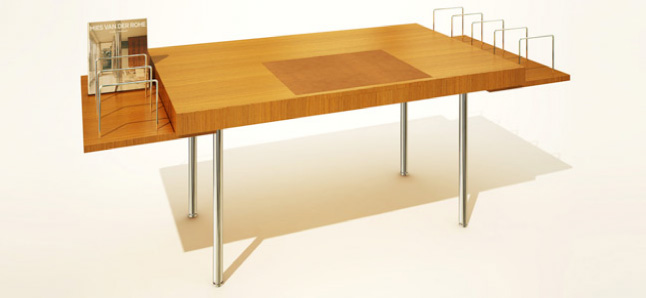
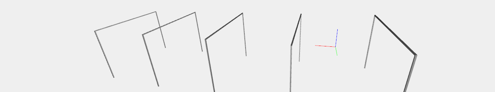
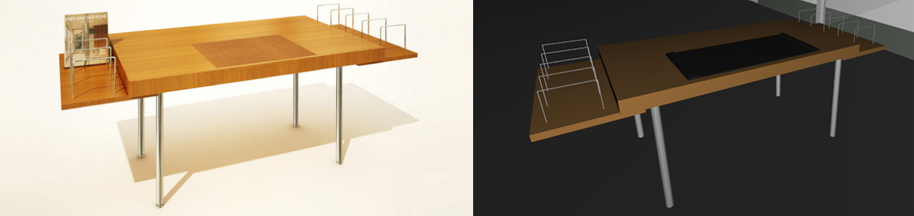

Farnsworth Desk
Description
The desk is a modified version of the desk that Mies van der Rohe designed in 1928 for the owners of the Tugendhat House in Brno in today’s Czech Republic. The modification consists of the addition of two cantilevered book shelves attached to the underside of the desk to hold books and other objects. This feature was created to provide some space, for books, etc.
Legs
The legs are built with the proper function CYLINDER, translated and then structed.
Plane
The main plane is a CUBOID([4, 7, 0.35]), the lateral ones are CUBOID([3.7, 2, 0.15]).
Shelves
The shelves are three thinnest CUBOIDs of depth 0.1 properly translated, cloned and structed.
Complete model
Legs, plane and shelves are then structed. The result of the function farnsworth_desk() is a perfect Plasm.js 3D model of the Mies van der Rohe's Farnsworth Desk.
Sources: dirklohandesigns.com